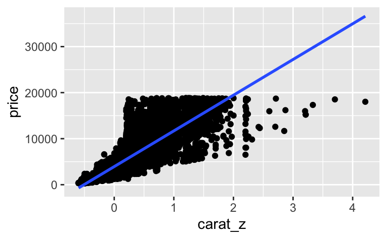

Betrachten Sie folgendes Modell, das den Zusammenhang des Preises (price)
und dem Gewicht (carat) von Diamanten untersucht (Datensatz diamonds).
library(tidyverse)
data(diamonds)Aber zuerst zentrieren wir den metrischen Prädiktor carat,
um den Achsenabschnitt besser interpretieren zu können.
diamonds <-
diamonds %>%
mutate(carat_z = carat - mean(carat, na.rm = TRUE))Dann berechnen wir ein (bayesianisches) Regressionsmodell, wobei wir auf die Standardwerte der Prior zurückgreifen.
library(rstanarm)## Loading required package: Rcpp## This is rstanarm version 2.21.3## - See https://mc-stan.org/rstanarm/articles/priors for changes to default priors!## - Default priors may change, so it's safest to specify priors, even if equivalent to the defaults.## - For execution on a local, multicore CPU with excess RAM we recommend calling## options(mc.cores = parallel::detectCores())lm1 <- stan_glm(price ~ carat_z, data = diamonds,
refresh = 0)
summary(lm1)Estimates:
mean sd 10% 50% 90%
(Intercept) 3932.5 6.8 3923.7 3932.5 3941.1
carat_z 7756.3 14.2 7737.8 7756.2 7774.7
sigma 1548.6 4.8 1542.5 1548.6 1554.7
Zur Verdeutlichung ein Diagramm zum Modell:
diamonds %>%
ggplot() +
aes(x = carat_z, y = price) +
geom_point() +
geom_smooth(method = "lm")## `geom_smooth()` using formula 'y ~ x'
lm1? Runden Sie auf eine Dezimale. Geben Sie nur eine Zahl ein.lm1 ergänzt, so dass die Schliffart (cut) des Diamanten kontrolliert (adjustiert) wird. Anders gesagt: Das Modell soll die mittleren Preise für jede der fünf Schliffarten angeben. Geben Sie nur die Regressionsformel an. Lassen Sie zwischen Termen jeweils ein Leerzeichen Abstand.Hinweis: Es gibt (laut Datensatz) folgende Schliffarten (und zwar in der folgenden Reihenfolge):
diamonds %>%
distinct(cut)## # A tibble: 5 × 1
## cut
## <ord>
## 1 Ideal
## 2 Premium
## 3 Good
## 4 Very Good
## 5 Fairlevels(diamonds$cut)## [1] "Fair" "Good" "Very Good" "Premium" "Ideal"
Unser Modell lm1 schätzt den Preis eines Diamanten mittlerer Größe auf etwa 3932.5 (was immer auch die Einheiten sind, Dollar vermutlich).
price ~ carat_z + cut
Das Modell könnten wir so berechnen:
library(rstanarm)
lm2 <- stan_glm(price ~ carat_z + cut, data = diamonds,
refresh = 0)
summary(lm2)Estimates:
mean sd 10% 50% 90%
(Intercept) 3579.4 9.7 3566.9 3579.5 3591.9
carat_z 7871.5 14.2 7853.1 7871.4 7890.3
cut.L 1239.4 26.3 1205.7 1239.6 1272.6
cut.Q -527.9 23.4 -557.9 -528.3 -497.7
cut.C 367.7 20.4 341.8 367.7 393.5
cut^4 74.9 16.5 53.6 75.0 95.5
sigma 1511.5 4.6 1505.6 1511.5 1517.4
lm(price ~ carat_z + cut, data = diamonds)##
## Call:
## lm(formula = price ~ carat_z + cut, data = diamonds)
##
## Coefficients:
## (Intercept) carat_z cut.L cut.Q cut.C cut^4
## 3579.27 7871.08 1239.80 -528.60 367.91 74.59Man könnte hier noch einen Interaktionseffekt ergänzen.
Categories: